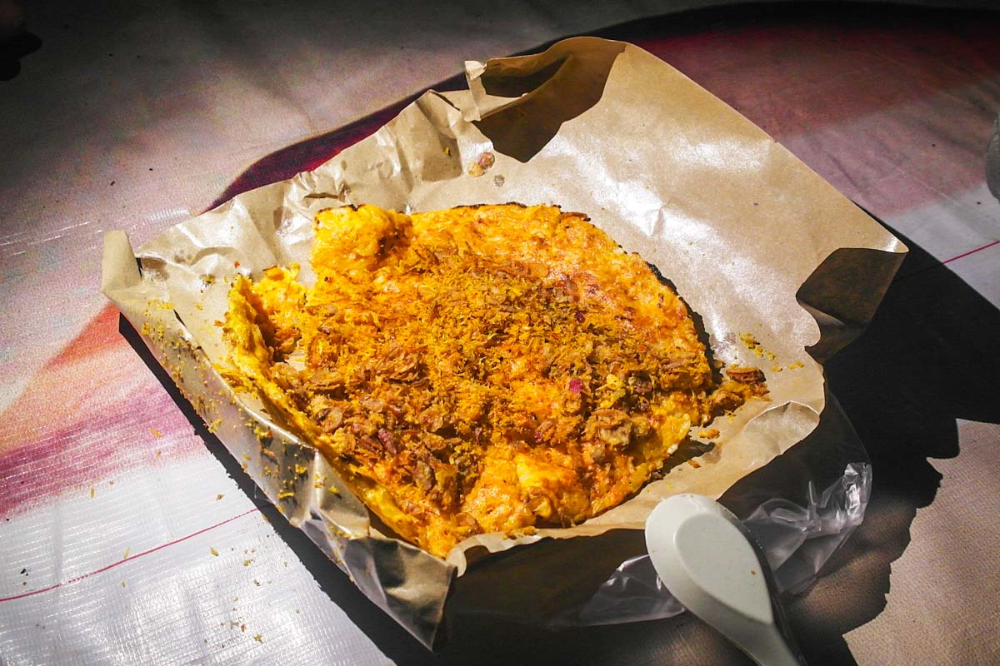

Tak hanya sering diburu saat acara pernikahan zaman kini, selendeang mayang
Sudah menjadi minuman popular sejak zaman belanda
Budayawan Betawi Yahya Andi Saputra menjelaskan, es selendang mayang menjadi minuman kegemaran masyarakat Betawi sampai orang Belanda pada saat musim panas.
Es selendang mayang merupakan minuman khas Betawi yang isinya mirip seperti puding atau kue lapis yang terbuat dari tepung sagu aren.
Lapisan selendang mayang terdiri dari warna putih berasal dari santan dan merah muda atau hijau.
Penjajanya biasa memotong kue selendang mayang berbentuk persegi agak tipis kemudian disajikan di mangkuk. Disiram pemanis dari gula merah atau sirup, santan, dan potongan es batu.
Penjajanya biasa memotong kue selendang mayang berbentuk persegi agak tipis kemudian disajikan di mangkuk. Disiram pemanis dari gula merah atau sirup, santan, dan potongan es batu.
“Minuman ini dulu sering dijajakan oleh pedagang kala menjelang tengah hari sampai sore hari. Selendang mayang ramai dijual saat Batavia memasuki musim panas,”papar yahya kepada kompas.com,Rabu(11/11/2020).
Ia menjelaskan jika pada saat musim hujan pedagang mulai jarang yang menjual kudapan ini. Namun, pada bulan Juni hingga November atau saat musim panas, minuman ini sangat laris di pasaran.
Yahya mengatakan bahwa di Kota Tua atau Old Batavia dulu menjadi tempat pertemuan pasar-pasar seperti Pasar Penabang, Pasar Senen dan lain-lain. Di sanalah minuman ini sering kali dijajakan.
Minuman asli Betawi ini sudah dinikmati oleh semua etnis di Batavia dulu. Semua kalangan mulai dari rakyat biasa, etnis Tionghoa sampai bangsa Belanda suka mengkonsumsi sajian ini.
Warna mencolok, bernuansa tropikal dari selendang mayang membuat orang tertarik untuk menyantapnya. Saat udara di Batavia kala itu sangat panas, minuman ini sering diburu banyak orang dari kalangan atau etnis manapun.
“Menurut cerita orang yang pernah tinggal di kawasan Cikini, menceritakan jika pada zaman dahulu orang-orang Belanda yang tinggal di Menteng itu sambil koloran suka beli selendang mayang saat cuaca sedang panas,”papar Yahya.

Popularitas minuman ini tak habis dimakan waktu. Kini kamu bisa menemukan kudapan manis ini di banyak tempat.
“Sekarang memang sudah muncul kembali dijual di Museum Fatahilah, lalu juga di gang-gang di Mampang Prapatan contohnya, lalu juga perkampungan budaya Betawi seperti Setu Babakan,” jelas Yahya.
Selain itu selendang mayang juga diangkat menjadi welcome drink di beberapa hotel berbintang di Jakarta. Kemudian minuman ini juga sering nampak dijual di restoran mewah yang mengusung gaya tradisional.
Selain itu selendang mayang juga diangkat menjadi welcome drink di beberapa hotel berbintang di Jakarta. Kemudian minuman ini juga sering nampak dijual di restoran mewah yang mengusung gaya tradisional.
“Selendang mayang juga sudah ada di Mall-mall restoran, atau juga menjadi minuman yang wajib ada di acara pernikahan pada zaman saat ini,”pungkas Yahya.
Date/Time:
Ini Adalah Contoh Makanan Khas Betawi Yaitu Kerak Telor

Ini Adalah Contoh Makanan Khas Madura Yaitu Sate

Ini Adalah Contoh Makanan Khas Makassar Yaitu Kue Pancong

Ini Adalah Contoh Makanan Khas Barabai Yaitu Apam Barabai

Contoh Makanan Khas Jawa Tengah Yaitu Kembang Goyang

Contoh Makanan Khas Jawa Tengah dan sekitarnya yaitu nasi tumpeng